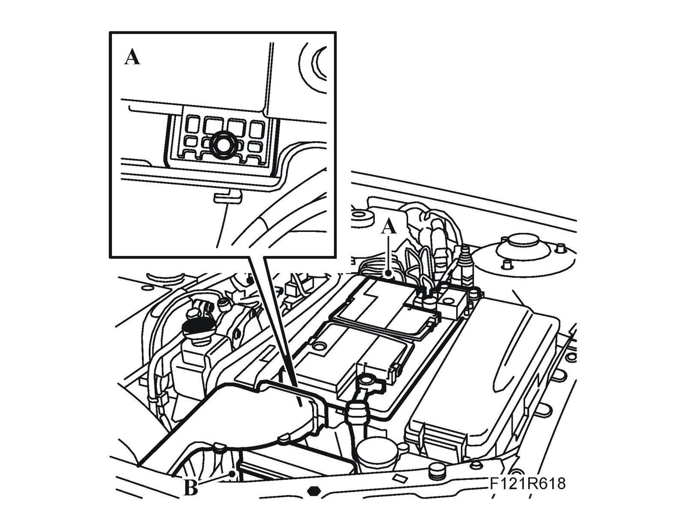
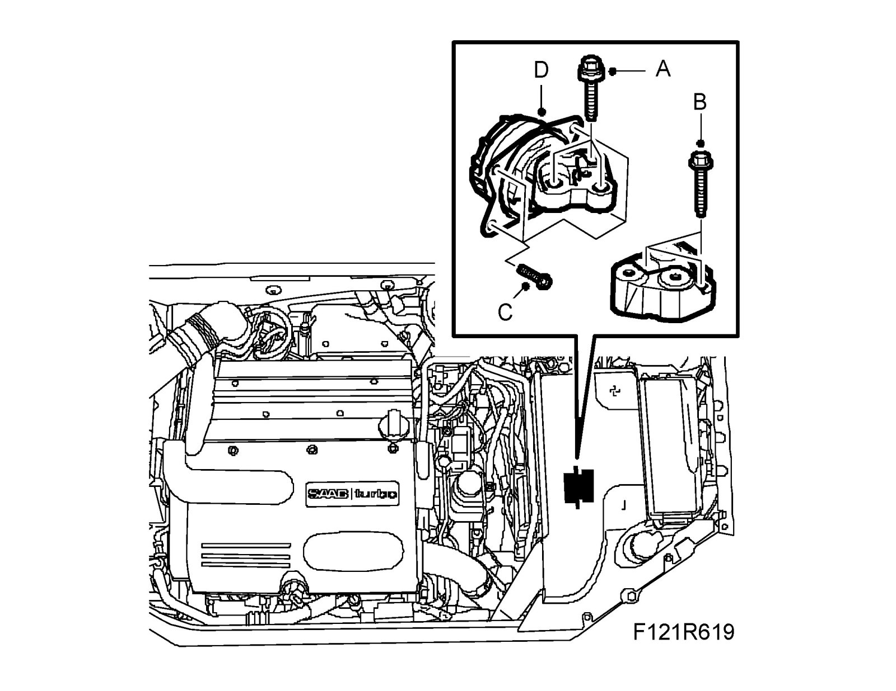
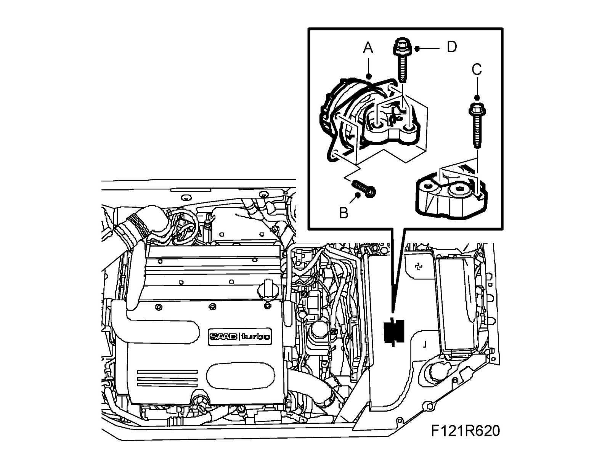
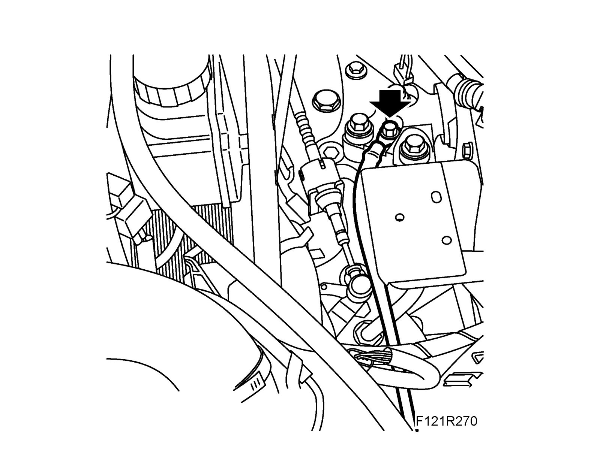
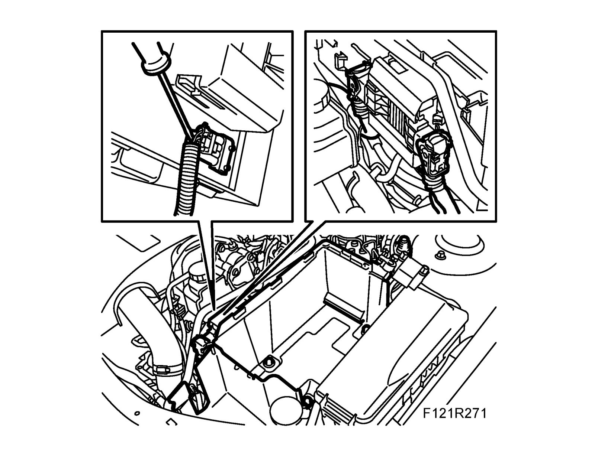
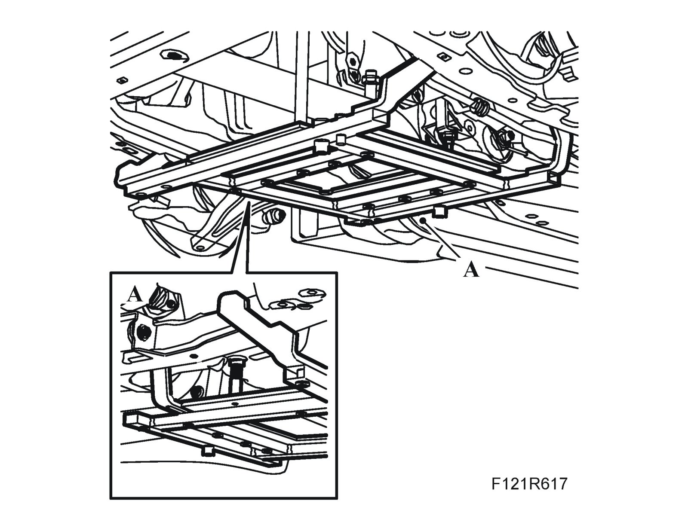

Engine Mounting, Left-Hand
Engine mounting, left-handTo remove
1. Place drapes over the wings to keep the paintwork clean and protect it from damage. Raise the car.
2. CV: Remove the cross brace. See Chassis reinforcement, front subframe, CV
3. Fit 83 96 152 Centering tool, power unit (A) to the subframe. See also Centering tool, engine and subframe.

4. Lower the car.
5. Remove the battery (A).

6. Remove the battery tray (B)
7. Remove the ground cable from the engine mounting.
8. Remove the engine pad bolts (A) from the gearbox bracket.

9. Remove the bolts (B) for the gearbox bracket. Lift out the bracket.
10. Remove the engine pad bolts (C) from the body.
11. Remove the engine pad (D).
To fit
1. Fit the engine pad (A) in place. Tighten the bolts (B).
Tightening torque: 15 Nm + 45° (11 lbf ft + 45°)

2. Fit the gearbox bracket (C).
Tightening torque 80 Nm (59 lbf ft).
3. Fit the engine pad bolts (D) to the bracket.
Tightening torque 53 Nm (39 lbf ft)
4. Fit the ground cable to the engine pad.

5. Fit the battery tray and battery.

6. Raise the car and remove 83 96 152 Centering tool, power unit (A) from the subframe.

7. CV: Fit the cross brace. See Chassis reinforcement, front subframe, CV
8. Lower the car and remove the wing protectors.
9. Carry out Procedures after reconnecting the battery